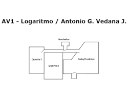
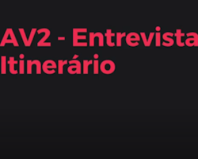
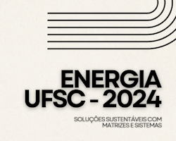
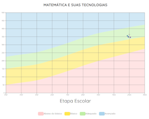
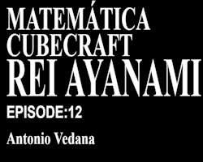
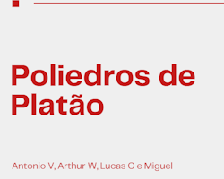

Nessa atividade, o objetivo era compreender a utilização de logaritmos para medição e conversão de som. Para isso, primeiro medi o som ambiente dos cômodos da minha casa (em dB). Depois disso, realizei o cálculo de conversão de dB para P, registrando-os num Google Documentos. Essa atividade me ajudou a exercitar e praticar o meu cálculo de logaritmo.
Habilidades: C2, H5, H13.

Para esse trabalho, era necessário entrevistar um professor (ou outro profissional) do itinerário Técnico ou STEAM, realizando questões relacionadas à área de matemática e suas aplicações e influências na área do profissional. Meu grupo entrevistou a Professora Senna, que atualmente leciona Fundamentos da TI. A atividade demonstrou as influências da matemática na área de TI, e como ela afeta a carreira profissional e a área como um todo.
Habilidades: C2, H13.

Para esta atividade, tínhamos como objetivo apresentar soluções sustentáveis para problemas do cotidiano por meio da utilização de matrizes e sistemas lineares, em conjunto com pesquisa e análise de dados. Nosso grupo escolheu a Universidade Federal de Santa Catarina (UFSC) como objeto de estudo, com enfoque em sua rede elétrica, gasto de energia e demais aspectos. Observamos que o câmpus de Florianópolis é responsável pela maior parte do consumo e, ao final do relatório e da apresentação, sugerimos algumas soluções para a problemática, como a utilização de energia fotovoltaica (área em que a UFSC é pioneira, com seu laboratório de fotovoltaica) e a realocação de horários de pico para fora da ponta. Este projeto expandiu minha capacidade de coleta e análise de dados, bem como de busca por soluções, além de consolidar os conceitos de matrizes e sistemas lineares por meio da conexão com temas relevantes do cotidiano.
Habilidades: C2 - Reconhecer e utilizar a linguagem algébrica e suas representações como a linguagem das ciências, necessária para expressar a relação entre grandezas e criar modelos descritivos permitindo conexões da matemática, com em fenômenos, sistemas naturais e tecnológicos, H5 - Ler e interpretar diferentes linguagens e representações envolvendo variações de grandezas, H6 - Ampliar conhecimentos sobre a resolução de equações de primeiro e segundo grau, bem como sobre a resolução de sistemas de equações de duas ou mais incógnitas para sistemas lineares 3 por 3, aplicando esse estudo à resolução de problemas simples de outras áreas do conhecimento, H8 - Compreender os conceitos de matrizes e determinantes e suas aplicações na resolução de situações-problema.

Este card refere-se à prova do Avalia SESI de Matemática, aplicada em 23 de junho. Minha nota foi 363,67 (de 500), posicionando-me no nível adequado e acima dos marcadores DR, Rede e Escola (346,77; 349,50; e 356,47, respectivamente). Embora tenha melhorado consideravelmente em relação à avaliação diagnóstica do primeiro trimestre, acredito que ainda possa avançar mais e considero que tais avaliações são fundamentais para consolidar meus conhecimentos na área e testá-los.

Nessa atividade, o objetivo era montar um boneco papercraft e, a partir dele, compreender o cálculo de áreas (e entender conceitos estudados em sala sobre geometria). Primeiro, desenhei e pintei o boneco, e depois o recortei e montei. Posteriormente, calculei a área das partes brancas e das partes pretas, além do volume ao todo, montando uma apresentação sobre o personagem escolhido (Rei Ayanami) e os cálculos. Posteriormente, gravei junto com outros colegas um vídeo stop-motion de 30s com o meu boneco e dos meus colegas. Essa atividade me ajudou a visualizar melhor como o cálculo de área funciona na prática e facilitou meu entendimento do conteúdo.
Habilidades: C3 - Utilizar conhecimentos geométricos para visualizar e representar partes do mundo real, compreender e construir modelos em múltiplos contextos, H18 - Identificar representações geométricas, planas e espaciais, para leitura, compreensão e ação sobre a realidade, H19 - Utilizar formas geométricas espaciais para representar ou visualizar partes do mundo real, como peças mecânicas, embalagens e construções, H20 - Interpretar e associar objetos sólidos a suas diferentes representações bidimensionais, como projeções, planificações, cortes e desenhos.

Neste trabalho, eu e meu grupo montamos Poliedros de Platão utilizando palitos de churrasco e balas de goma como materiais. Depois da montagem, calculamos o volume de cada um com base na aresta de cada (comprimento do palito) e realizamos uma apresentação sobre os Poliedros de Platão. Foi um trabalho divertido por incluir uma habilidade prática.
Habilidades: C3 - Utilizar conhecimentos geométricos para visualizar e representar partes do mundo real, compreender e construir modelos em múltiplos contextos, H18 - Identificar representações geométricas, planas e espaciais, para leitura, compreensão e ação sobre a realidade, H19 - Utilizar formas geométricas espaciais para representar ou visualizar partes do mundo real, como peças mecânicas, embalagens e construções, H20 - Interpretar e associar objetos sólidos a suas diferentes representações bidimensionais, como projeções, planificações, cortes e desenhos.